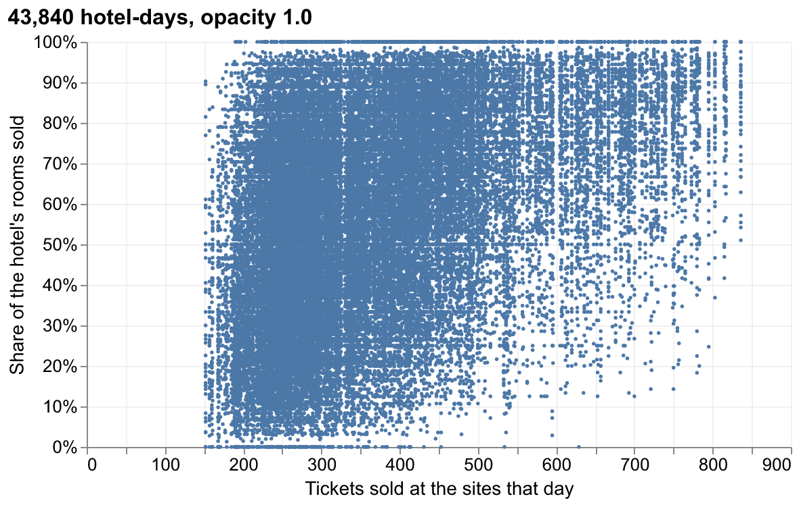
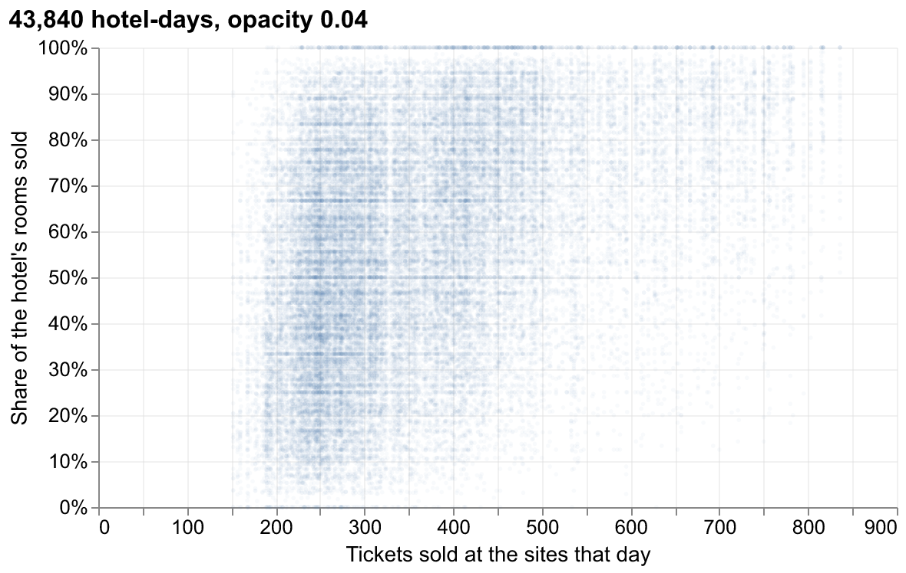
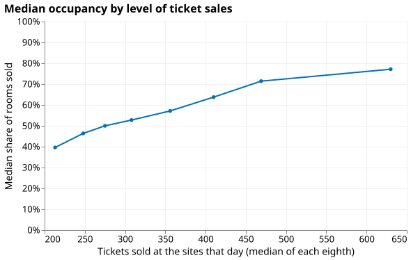
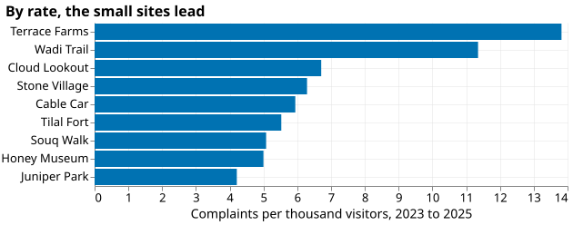
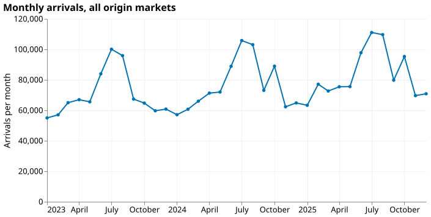
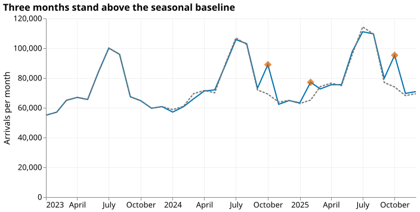
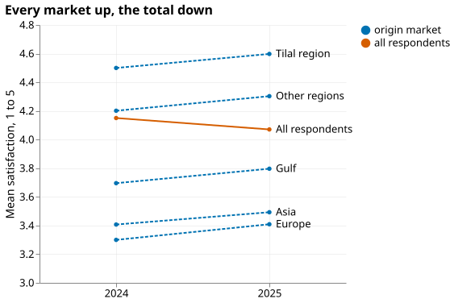

Spend per stay has a mean of 2,736 riyals and a median of 1,498. It is missing for 22% of day visits and 2% of overnight stays. Which sentence is honest?
A typical party spends about 2,700 riyals in the region
Half of the parties that reported spend spent under 1,500 riyals; day visits are under-reported
Spend is about 1,500 riyals once missing values are filled in
Spend cannot be summarised until the largest stays are removed
Why. A long tail calls for the median, and a summary carries what was left out and whom it concerns.
Before two variables can meet
Two tables relate only at one unit of observation
tickets150,000 sales, summed to tickets per day
+
occupancy43,840 hotel-days, rooms sold over rooms
→
one table43,840 rows: a hotel, a day, its occupancy, the day's tickets
Bring each table to the unit of the answer, then join.
Count the rows before and after. More rows: something was repeated. Fewer: something was dropped.
The day's ticket total is repeated on 40 hotels. That is intended, and it has a consequence you will see.
The first attempt
43,840 opaque points draw a block, not a relation

Every point is there. Nothing can be read.
A scatter plot shows each unit as a point. Past a few thousand, points hide points.
The block says only where data exists: 152 to 836 tickets a day, 0 to 100% of rooms.
Overplotting hides density, and density is the message.
Repair 1 · Lab 2.1, step 2
Transparency turns overlap into darkness

The same points at opacity 0.04.
A dark band now rises from left to right.
The horizontal stripes are banding: a hotel of 8 rooms can only be 0, 1/8, 2/8 … full, nine possible values.
Banding is a feature of the unit, not of tourism. Name it so that nobody explains it.
Each cell counts the hotel-days that fall in it. The count goes to colour.
It works for a million points as well as for forty thousand.
It shows where the points are. It does not yet say how much occupancy rises.
Repair 3 · Lab 2.1, step 4
To read "how much", summarise y inside bins of x

Eight groups of days, equal in size, by tickets sold.
Cut the days into eighths by tickets sold; take the median occupancy of each.
Quietest eighth: 40% of rooms sold. Busiest eighth: 77%.
The y axis runs from 0 to 100%, so the rise is drawn at its true size.
Lab 2.1, step 5
One relation, two units, two correlations
0.39
across 43,840 hotel-days
0.70
across 156 weeks, all hotels together
Adding up 40 hotels and 7 days averages away what is particular to one hotel on one night.
Weeks answer: does the region's occupancy move with the sites?
Hotel-days answer: can one hotel's night be told from the day's ticket sales?
There is no "the correlation". Report the coefficient with its unit and its number of units.
The second sentence of the reading
A relation between two series is not yet a reason
Summer raises ticket sales. Summer raises hotel bookings.
Festivals do the same, in October and February.
Two series that share a calendar move together whether or not one feeds the other.
What the reading may say
"Weeks with more ticket sales are weeks with fuller hotels (0.70 across 156 weeks). Both rise in summer and at festivals, so the data does not show that site visits fill hotels."
Checkpoint
Which picture, and which number?
A transport authority has 2 million trips, each with distance and fare. An analyst wants to show how fare rises with distance. What should the first chart be?
A scatter plot of every trip, so that no trip is left out
A scatter plot of 200 trips picked at random from the file
The correlation of fare and distance, printed as one figure
A binned heatmap of the trips, then the median fare by distance band
Why. With many points, show density by counting in cells, then answer "how much" with a summary inside bins of x.
Ask 3 of the brief
A ranking by count is mostly a ranking by size
Site
Complaints
Visitors
Cable Car
599
100,822
Souq Walk
394
77,599
Tilal Fort
296
53,558
Wadi Trail
243
21,408
Terrace Farms
167
12,083
"A lot of complaints about the Cable Car": 599 of 2,418, a quarter of the log.
It also receives a quarter of all visitors.
The count answers "where is the workload?". It does not answer "where does a visit go wrong most often?".
The choice that decides the answer
The denominator is whoever could have produced the event
Question
Rate
Denominator
Where does a visit go wrong most often?
complaints per thousand visitors
tickets sold at the site
Which market complains most readily?
complaints per thousand visitors of that origin
tickets sold to that origin
Is the queue the issue on busy days?
queue complaints per thousand visitors, by day
tickets sold that day
Per thousand, so that the reader sees numbers like 5.9, not 0.0059.
A rate travels with its two parts: 599 of 100,822.
Lab 2.2, step 2
Bring each table to the unit of the answer, then join
WITH c AS (SELECT site, count(*) AS complaints FROM complaints GROUP BY site),
v AS (SELECT site, sum(tickets) AS visitors FROM tickets GROUP BY site)
SELECT site, complaints, visitors,
1000.0 * complaints / visitors AS per_thousand
FROM c JOIN v USING (site)
ORDER BY per_thousand DESC
Nine rows in, nine rows out. The totals still read 2,418 complaints and all tickets sold.
Joining the raw tables on site pairs every complaint with every sale: millions of rows and a rate that means nothing.
Lab 2.2, step 3
By rate, the Cable Car is fifth and the smallest site is first

Complaints per thousand visitors, 2023 to 2025.
Cable Car: first by count, fifth by rate (5.9).
Terrace Farms: seventh by count, first by rate (13.8), on 167 complaints.
Wadi Trail is high on both readings of "problem": fourth by count (243), second by rate (11.4).
Lab 2.2, steps 4 and 5
Cut finer and the highest rates rest on the fewest cases
Site × origin
Complaints
Visitors
Published
Terrace Farms × Asia
6
441
withheld
Terrace Farms × Europe
4
321
withheld
Cloud Lookout × Asia
6
1,769
withheld
Honey Museum × Asia
8
2,075
withheld
The board's rule: publish a cell only with at least 10 complaints and 1,000 visitors.
Four of 45 cells are held back. Two of them would have shown the highest rates in the table.
One more complaint moves a rate built on 4 by a quarter.
The stretch of lab 2.2
A withheld cell beside a published total can be recovered
By subtraction
Honey Museum: 139 complaints in total, four origin cells published, one withheld. The fifth is 139 minus the four: 8.
What the analyst does
marks every cell that fails the rule
checks each row and column for a single withheld cell
hands the table to the person who owns the rule
Where this continues. Second-cell suppression, differencing between releases and the classification of outputs are taught in DS-207. Here you learn to see the problem and to mark the cells.
Checkpoint
Which sentence can be printed?
A city logs 420 pothole reports in District A (300 km of road) and 150 in District B (60 km of road). The mayor asks where the roads are worse. What do you report?
District B: 2.5 reports per km of road against 1.4 in District A
District A: it has almost three times as many reports as B
Both: the city has 570 reports on 360 km, or 1.6 per km
Neither: reports per resident are needed before any answer
Why. The question is about roads, so the count is divided by what could have had a pothole: kilometres of road, with both parts shown.
Reading a time series
A monthly line holds three things at once

Arrivals per month, all origin markets.
Trend: each summer peak is higher than the last.
Season: the same shape every year, highest in July.
Events: three spikes that are not in summer.
Draw it this way. Time on x, left to right, evenly spaced; a line for a continuous series; the y axis from zero when sizes are compared.
Lab 2.3, step 2
A seasonal index says how a month compares with an average month
1.43
July: 43% above an average month
0.78
January: 22% below
Divide each month of 2023 by the mean of its twelve months.
Twelve numbers with a mean of 1.
2023 had no festival, so its shape is the season alone.
What goes wrong. "Arrivals rose 30% from May to July" describes the calendar. It happens every year.
Lab 2.3, step 3
The same month a year earlier removes the season, and hides what repeats
Month
Festival
Change on a year earlier
October 2024
Honey Festival, first edition
+37%
February 2025
Heritage Nights, first edition
+27%
October 2025
Honey Festival, second edition
+7%
A typical month grew 6.9% on the year before.
October 2025 looks ordinary because it is compared with October 2024, which had the same festival.
Lab 2.3, step 4
A baseline is what the month would have been: season times trend

Actual arrivals and the baseline, dashed.
Baseline: the same month of 2023, grown by the typical yearly growth.
October 2024: +29%. February 2025: +18%. October 2025: +29%.
Every other month sits within 5% of the baseline.
What the reading must carry
A baseline is a choice, and the excess inherits it
It rests on one year
2023 is the only year without a festival. A wet July in 2023 would sit in every later baseline.
It assumes steady growth
One growth figure for every month and every market. Session 4 shows the markets grew at different speeds.
It does not name a cause
"29% above the baseline in the festival month" is what the data shows. A school holiday in the same month would look the same.
In the report. State the baseline in one line under the chart, and give the excess as a percentage and as arrivals.
Checkpoint
Compared with what?
A library ran a reading campaign in March 2025. Loans were 9,000 in February 2025, 11,500 in March 2025 and 11,000 in March 2024. Loans grew 3% a year before the campaign. Which statement is supported?
The campaign raised loans by 28%, from 9,000 to 11,500
Loans stood 4.5% above the level expected without a campaign
Loans stood about 1.5% above a baseline of 11,330 for March 2025
The campaign failed, since loans rose less than in a normal year
Why. The baseline is the same month a year earlier, grown by the usual 3%: 11,330. The excess is 170 loans, small enough to be within the baseline's own wobble.
Ask 5 of the brief
Satisfaction fell overall and rose in every market
All respondents
2024
2025
Mean satisfaction
4.15
4.07
Origin market
2024
2025
Tilal region
4.50
4.60
Other regions
4.20
4.30
Gulf
3.70
3.80
Asia
3.41
3.49
Europe
3.30
3.41
Both tables are right. They come from the same 4,200 responses, and nobody made an arithmetic error.
The mechanism
A total is a weighted average: the weights are the mix
overall mean = sum over groups of ( share of the group × mean of the group )
2024: 0.40 × 4.50 + 0.35 × 4.20 + 0.12 × 3.70 + 0.07 × 3.41 + 0.06 × 3.30 = 4.15
2025: 0.26 × 4.60 + 0.30 × 4.30 + 0.19 × 3.80 + 0.13 × 3.49 + 0.12 × 3.41 = 4.07
The total moves when the group means move, or when the shares move.
Here the means all rose by about 0.1 and the shares moved against them.
Lab 2.4, step 3
The markets that score lowest grew from a quarter of the responses to almost half
Tilal region40% → 26%
Other regions35% → 30%
Gulf12% → 19%
Asia7% → 13%
Europe6% → 12%
Bars: share of survey responses in 2025. Values: 2024 → 2025.
International visitors rate lower in both years, and there are far more of them in 2025.
That is the board's own strategy working: Day 3 shows international arrivals up 42% to 67% since 2023.
Lab 2.4, step 5
One chart can hold the parts and the total

Mean satisfaction, 1 to 5. Each line is labelled at its end.
Five lines up, one line down: the reader sees the reversal before reading a word.
The total differs from the parts in colour and in line style.
The axis starts at 3.0. For positions on a 1 to 5 scale that is fair; for bars it would not be.
Lab 2.4, step 4
Hold the mix fixed, and the comparison answers one question
With last year's mix of visitors, this year would have scored up 0.10, not down 0.08.
Say which mix was used. Another reference mix gives another figure, with the same direction here.
Neither number is "the right one"
The total and the fixed-mix figure answer different questions
Question
Figure
Answer
How satisfied was the average respondent this year?
the total
4.07, down 0.08
Did the experience of comparable visitors improve?
by market, or at a fixed mix
up about 0.10 in every market
Why did the total fall?
the change of mix
more visitors from markets that rate lower
When to suspect a reversal. Groups differ in level, and their shares changed between the things you compare. Check the mix before explaining any change in a total.
Checkpoint
What do you check first?
A centre's pass rate fell from 82% to 76%. Evening courses always pass less often than day courses, and evening enrolment doubled. What comes before writing "teaching quality fell"?
Wait for one more year of results so that the fall is certain
Compare pass rates inside day and evening courses, and the shares of each
Recompute the pass rate for day courses only and report that figure
Weight the pass rate by enrolment so that large courses count for more
Why. The groups differ in level and their shares changed: the total may have fallen with both pass rates steady or rising. Look at the parts and at the mix.
Day 2
A number depends on what it is set against
Its unit
0.39 by hotel-day, 0.70 by week. Say which.
Its denominator
First by count, fifth by rate. Print both parts.
Its baseline
+7% on last year, +29% on the season. State the baseline.
Its mix
Down overall, up in every market. Check the shares.
Day 3
Building honest charts
A chart as a specification, small multiples, six misleading charts to repair, and one chart in Arabic and English.
Tonight, look at one chart in a report you receive at work and ask where its y axis starts.
Every lab of Day 3 starts from the supplied tables.